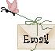

About
My name is Stephanie (which you probably already guessed) and I've been using Pure Data as a music maker and tuner for a few years now. My chief interest in Pure Data is utilizing it for my electronic music as a kind of alternative tuning system. I am a traditional organ player by trade, but when I began transitioning to electronic music to play live I found I needed something to keep my electronic instruments tuned to the system of my choice.
It was then that a friend mentioned their use of Pure Data to me. I was enamored with it from the start and I've found it to be an great tool in my kit when it comes to using alternative tuning systems that would ordinarily be difficult to achieve.
When it came to learning about how to use Pure Data I found the community to be one of the most welcoming and patient I've experienced, with forums dedicated to sharing patches and problem-solving. When I recommend Pure Data now, it's one of the first things I mention. The community that has been cultivated around the use and distribution of Pure Data, not only on the official website but in many thoughtful tutorials on Youtube, is perhaps its greatest selling point.
Click the link below if you want to email me for further questions or information.
